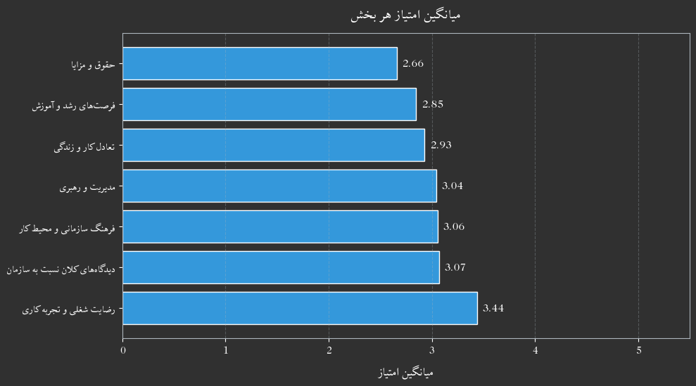

# imports and functionsimport jsonimport requestsimport arabic_reshaperfrom bidi.algorithm import get_displayfrom matplotlib import font_manager, rcimport numpy as npimport matplotlib.pyplot as pltimport pandas as pdimport matplotlib.cm as cmimport matplotlib.colors as mcolorsfrom matplotlib.lines import Line2Dfrom collections import Counter, defaultdictCOLORS = {"danger": "#e74c3c","warning": "#f39c12","primary": "#375a7f","info": "#3498db","success": "#00bc8c","secondary": "#444","light": "#adb5bd","dark": "#303030"}SURVEY_ID ="1617468"BASE_SURVEY_URL ="https://survey.porsline.ir"withopen("psk.txt",'r') as fh: api_key = fh.readline().strip()api_key_text =f"API-Key {api_key}"headers = {'Authorization': api_key_text,'Content-Type': 'application/json'}url = BASE_SURVEY_URL +f"/api/v2/surveys/{SURVEY_ID}/responses/results-table"response = requests.request("GET", url, headers=headers)n_responders =int(response.json()["responders_count"])# تابع تبدیل متن فارسیdef prepare_persian_text(text): reshaped_text = arabic_reshaper.reshape(text)return get_display(reshaped_text)# تنظیم فونت فارسیfont_path ="fonts/xb-zar/Zar/XB Zar.ttf"# مسیر فونت # مسیر فونت فارسیprop = font_manager.FontProperties(fname=font_path)rc('font', family=prop.get_name())# Load the excel filedf = pd.read_excel('Phase02.xlsx')# Pre-Proccessing# ======================================================================================================## Size unificationordered_company_sizes = ['کمتر از ۵۰ نفر','۵۱ تا ۲۰۰ نفر', # Combined category'۲۰۰ تا ۵۰۰ نفر','بیش از ۵۰۰ نفر']ordered_ages = ['کمتر از ۲۵ سال','۲۶ تا ۳۵ سال','۳۶ تا ۴۵ سال','بالای ۴۵ سال']# Create a mapping from the original size values to the desired ordersize_mapping = { size: '۵۱ تا ۲۰۰ نفر'for size in df['اندازه شرکت:'].unique()if'۵۱ تا ۱۰۰ نفر'in size or'۱۰۱ تا ۲۰۰ نفر'in size}size_mapping.update({ size: sizefor size in df['اندازه شرکت:'].unique()if'کمتر از ۵۰ نفر'in size or'۲۰۰ تا ۵۰۰ نفر'in size or'بیش از ۵۰۰ نفر'in size})df['اندازه شرکت:'] = df['اندازه شرکت:'].map(size_mapping)df.insert(17, 'score_section_2', None)df.insert(24, 'score_section_3', None)df.insert(31, 'score_section_4', None)df.insert(36, 'score_section_5', None)df.insert(43, 'score_section_6', None)df.insert(48, 'score_section_7', None)df.insert(54, 'score_section_8', None)QUESTIONS = df.columns.tolist()section2_answer_order = ['به هیچ وجه','کم','متوسط','زیاد','خیلی زیاد']section3_answer_order = ['خیلی مخالفم','مخالفم','تا حدودی','موافقم',"خیلی موافقم"]section6_answer_order = ['به هیچ وجه','کم','تا حدودی','زیاد','خیلی زیاد']# Assiging Questions to each sectionssection_2_questions = [QUESTIONS[11], QUESTIONS[12],QUESTIONS[13],QUESTIONS[14],QUESTIONS[15],QUESTIONS[16]]section_3_questions = [QUESTIONS[18], QUESTIONS[19], QUESTIONS[20], QUESTIONS[21], QUESTIONS[22], QUESTIONS[23]]section_4_questions = [QUESTIONS[25], QUESTIONS[26], QUESTIONS[27], QUESTIONS[28], QUESTIONS[29], QUESTIONS[30]]section_5_questions = [QUESTIONS[32], QUESTIONS[33], QUESTIONS[34], QUESTIONS[35]]section_6_questions = [QUESTIONS[37], QUESTIONS[38], QUESTIONS[39], QUESTIONS[40], QUESTIONS[41], QUESTIONS[42]]section_7_questions = [QUESTIONS[44], QUESTIONS[45], QUESTIONS[46], QUESTIONS[47]]section_8_questions = [QUESTIONS[49], QUESTIONS[50], QUESTIONS[51], QUESTIONS[52], QUESTIONS[53]]section_9_questions = [QUESTIONS[55], QUESTIONS[56], QUESTIONS[57], QUESTIONS[58], QUESTIONS[59], QUESTIONS[60], QUESTIONS[61]]def compute_section_score(df, question_cols, score_col, answer_order): score_map = {text: i +1for i, text inenumerate(answer_order)}# Map answers to scores column by column numeric_answers = df[question_cols].apply(lambda col: col.map(score_map))# Compute the row-wise average (skip NaNs) df[score_col] = numeric_answers.mean(axis=1) df[score_col] = df[score_col].round(3)return df# Computing scores for each sectiondf = compute_section_score(df, section_2_questions, 'score_section_2' , section2_answer_order)df = compute_section_score(df, section_3_questions, 'score_section_3' , section3_answer_order)df = compute_section_score(df, section_4_questions, 'score_section_4' , section3_answer_order)df = compute_section_score(df, section_5_questions, 'score_section_5' , section3_answer_order)df = compute_section_score(df, section_6_questions, 'score_section_6' , section6_answer_order)df = compute_section_score(df, section_7_questions, 'score_section_7' , section6_answer_order)df = compute_section_score(df, section_8_questions, 'score_section_8' , section6_answer_order)scores = {"رضایت شغلی و تجربه کاری" : df['score_section_2'].mean(),"تعادل کار و زندگی" : df['score_section_3'].mean(),"حقوق و مزایا" : df['score_section_4'].mean(),"فرصتهای رشد و آموزش" : df['score_section_5'].mean(),"فرهنگ سازمانی و محیط کار" : df['score_section_6'].mean(),"مدیریت و رهبری" : df['score_section_7'].mean(),"دیدگاههای کلان نسبت به سازمان" : df['score_section_8'].mean()}# University mappingdef load_university_map(filepath="universities.json"):withopen(filepath, "r", encoding="utf-8") as f:return json.load(f)def classify_universities(df, column, uni_map, inplace=True): cleaned_series = df[column].str.strip() mapped = cleaned_series.map(uni_map).fillna("نامشخص")if inplace: df[column] = mappedelse:return mappeduni_map = load_university_map()classify_universities(df, QUESTIONS[5], uni_map)# =======================================================================================================def plot_builder(df, column_name, ordered_list=None, colors=None, title=None, xlabel=None, ylabel=None):""" Generates a bar chart from a DataFrame column with optional ordering, coloring, and hatching, with automatic width adjustment. """# Check if the column existsif column_name notin df.columns:print(f"Error: The column '{column_name}' does not exist in the DataFrame.")returnif ordered_list: value_mapping = { value: ordered_valuefor ordered_value in ordered_listfor value in df[column_name].unique()if ordered_value == value } categorical_value = pd.Categorical(df[column_name].map(value_mapping), categories=ordered_list, ordered=True) df_sorted = df.assign(sorted_value=categorical_value).sort_values('sorted_value') unique_values_sorted = df_sorted['sorted_value'].unique() counts_sorted = df_sorted['sorted_value'].value_counts().reindex(ordered_list).fillna(0) x_labels = [prepare_persian_text(val) for val in counts_sorted.index]else: counts_sorted = df[column_name].value_counts() x_labels = [prepare_persian_text(val) for val in counts_sorted.index] unique_values_sorted = counts_sorted.index# Determine colors and hatching hatch_patterns = ['/', '.', 'o', None]if colors: bar_colors = [colors.get(val, COLORS['dark']) for val in unique_values_sorted] bar_hatches = [None] *len(unique_values_sorted)else: default_color_list = [COLORS['primary'], COLORS['success'], COLORS['warning'], COLORS['danger'], COLORS['info']] bar_colors = [default_color_list[i %len(default_color_list)] for i inrange(len(unique_values_sorted))]iflen(unique_values_sorted) >len(default_color_list): bar_hatches = [hatch_patterns[i %len(hatch_patterns)] for i inrange(len(unique_values_sorted))]else: bar_hatches = [None] *len(unique_values_sorted)# Calculate figure width num_bars =len(counts_sorted) bar_width =0.8 spacing =0.2 estimated_plot_width = num_bars * (bar_width + spacing) min_width =8 fig_width =max(min_width, estimated_plot_width) fig, ax = plt.subplots(figsize=(fig_width, 6))# Set dark background fig.patch.set_facecolor('#303030') ax.set_facecolor('#303030')# Plot barsfor i, (val, count) inenumerate(counts_sorted.items()): ax.bar(val, count, color=bar_colors[i], hatch=bar_hatches[i], edgecolor='#adb5bd', linewidth=1.5)# Title and labelsif title: ax.set_title(prepare_persian_text(title), color='white')if xlabel: ax.set_xlabel(prepare_persian_text(xlabel), color='white')if ylabel: ax.set_ylabel(prepare_persian_text(ylabel), color='white')# Counts above bars max_count =max(counts_sorted.values) ax.set_ylim(0, max_count *1.1)for i, count inenumerate(counts_sorted.values): per =round((count /sum(counts_sorted)) *100, 2) ax.text(counts_sorted.index[i], count + max_count *0.02,f"{int(count)}, ({per}%)", ha='center', va='bottom', color='white')# X-axis labels and ticks ang =0if num_bars ==2else45 ax.set_xticks(range(len(counts_sorted.index))) ax.set_xticklabels(x_labels, rotation=ang, ha='right', color='white') ax.tick_params(axis='x', colors='white') ax.tick_params(axis='y', colors='white')# Axis lines (spines)for spine in ax.spines.values(): spine.set_edgecolor('#adb5bd') plt.tight_layout() plt.show()def plot_stacked_bar_chart_from_counts( counts_dict, title="Stacked Bar Chart", xlabel="Category", ylabel="Count", colors=None, max_labels=10):""" Generates stacked bar charts from a counts dictionary. Applies prepare_persian_text and uses custom colors with dark theme. """ farsi_priority = ["اولویت اول", "اولویت دوم", "اولویت سوم", "اولویت چهارم","اولویت پنجم", "اولویت ششم", "اولویت هفتم", "اولویت هشتم" ] farsi_labels = [prepare_persian_text(label) for label in farsi_priority]# Prepare data x_labels =list(counts_dict.keys())# Filter long x-labelsiflen(x_labels) > max_labels: filtered_keys = x_labels[:max_labels] counts_dict_filtered = {k: counts_dict[k] for k in filtered_keys} counts_dict_filtered[prepare_persian_text('سایر')] = {}for k in x_labels[max_labels:]:for item, count in counts_dict[k].items():if pd.notna(item): counts_dict_filtered[prepare_persian_text('سایر')][item] =\ counts_dict_filtered[prepare_persian_text('سایر')].get(item, 0) + count counts_dict = counts_dict_filtered x_labels =list(counts_dict.keys())else: x_labels = [prepare_persian_text(label) for label in x_labels] all_elements =set()for counts in counts_dict.values():for element in counts.keys():if pd.notna(element): all_elements.add(element) elements =sorted(all_elements)if colors isNone: default_color_list = [ COLORS['primary'], COLORS['success'], COLORS['warning'], COLORS['danger'], COLORS.get('purple', 'purple'), COLORS.get('violet', 'violet'), COLORS['info'], COLORS.get('olive', 'olive') ] colors = { elements[i %len(elements)]: default_color_list[i %len(default_color_list)]for i inrange(len(elements)) }# Plot setup fig, ax = plt.subplots(figsize=(10, 6)) fig.patch.set_facecolor('#303030') ax.set_facecolor('#303030') bar_positions = np.arange(len(x_labels)) bottom = np.zeros(len(x_labels))for j, element inenumerate(elements): heights = [counts_dict.get(label, {}).get(element, 0) for label in x_labels] bars = ax.bar( bar_positions, heights, bottom=bottom, label=prepare_persian_text(element), color=colors.get(element, 'gray'), edgecolor='#adb5bd', linewidth=1.5 )# Add text on barsfor i, bar inenumerate(bars): height = bar.get_height()if height >0: ax.text( bar.get_x() + bar.get_width() /2, bar.get_y() + height /2,f'{int(height)}', ha='center', va='center', color='white', fontsize=10 ) bottom += np.array(heights)# Axes and labels ax.set_xticks(bar_positions) ax.set_xticklabels(farsi_labels[:len(bar_positions)], rotation=45, ha='right', fontsize=10, color='white') ax.set_xlabel(prepare_persian_text(xlabel), fontsize=12, color='white', labelpad=10) ax.set_ylabel(prepare_persian_text(ylabel), fontsize=12, color='white', labelpad=10) ax.set_title(prepare_persian_text(title), fontsize=14, color='white', pad=15)# Grid and spines ax.grid(axis='y', linestyle='--', alpha=0.5, color='#adb5bd')for spine in ax.spines.values(): spine.set_edgecolor('#adb5bd') ax.tick_params(colors='white')# Legend ax.legend( title=prepare_persian_text("دستهها"), title_fontsize=11, fontsize=10, labelcolor='white', facecolor='#303030', edgecolor='#adb5bd', loc='upper left', bbox_to_anchor=(1.02, 1) ) plt.tight_layout() plt.show()def column_elemnt_counter (df, hdr): column_name= hdr separator ="،" new_data = [] max_items =0for _, row in df.iterrows(): items =str(row[column_name]).split(separator) items = [item.strip() for item in items] new_data.append(items) max_items =max(max_items, len(items)) new_df = pd.DataFrame(new_data) new_df.columns = [f'priority{str(i +1).zfill(2)}'for i inrange(max_items)] # Create column name column_element_counts = {}for col in new_df.columns:try: new_df[col] = new_df[col].replace('nan', None)# Use value_counts() with dropna=False to include NaN counts counts = new_df[col].value_counts(dropna=True)# Convert to dictionary, handling potential type issues in keys column_element_counts[col] = {str(k): int(v) for k, v in counts.items()} exceptTypeErroras e:print(f"TypeError encountered in column '{col}': {e}")# Handle the error appropriately, e.g., skip the column or use a default column_element_counts[col] = {} # Or some other defaultexceptExceptionas e:print(f"An unexpected error occurred in column '{col}': {e}") column_element_counts[col] = {} # Or some other defaultreturn column_element_countsdef plot_responses_by_category( df, category_col, question_col, ordered_list=None, category_sort=None, COLORS=COLORS, title=None, xlabel=None, ylabel=None, percent=False,):# Group counts count_df = df.groupby([category_col, question_col]).size().unstack(fill_value=0)# Reorder columns if ordered_list is providedif ordered_list: count_df = count_df[[col for col in ordered_list if col in count_df.columns]]# Reorder index (categories) if category_sort is providedif category_sort: count_df = count_df.reindex([cat for cat in category_sort if cat in count_df.index])# Convert to percent if neededif percent: count_df = count_df.div(count_df.sum(axis=1), axis=0) *100# Prepare texts count_df.index = [prepare_persian_text(str(idx)) for idx in count_df.index] count_df.columns = [prepare_persian_text(str(col)) for col in count_df.columns]# Plot sizing num_categories = count_df.shape[0] bar_width =0.8 spacing =0.3 estimated_width = num_categories * (bar_width + spacing) fig_width =max(8, estimated_width)# Create figure and set background fig, ax = plt.subplots(figsize=(fig_width, 6)) fig.patch.set_facecolor('#303030') ax.set_facecolor('#303030')# Define colors n_bars =len(count_df.columns) color_list =list(COLORS.values()) if COLORS else []if n_bars >len(color_list): extra_colors =list(cm.Set2.colors) color_list += extra_colors[:n_bars -len(color_list)] bar_colors = color_list[:n_bars]# Plot count_df.plot( kind='bar', stacked=percent, edgecolor='#adb5bd', color=bar_colors, width=bar_width, ax=ax )# Titleif title: ax.set_title( prepare_persian_text(title), fontsize=16, pad=20, color='white' )# Axis labelsif xlabel: ax.set_xlabel( prepare_persian_text(xlabel), fontsize=14, labelpad=10, color='white' )if ylabel: label = ylabel if ylabel else ('درصد'if percent else'تعداد') ax.set_ylabel( prepare_persian_text(label), fontsize=14, labelpad=10, color='white' )iflen(count_df) ==2: angle =0else: angle =45# Tick styling ax.set_xticks(range(len(count_df.index))) ax.set_xticklabels(count_df.index, rotation=angle, ha='right', fontsize=12, color='white') ax.tick_params(axis='x', colors='white') ax.tick_params(axis='y', colors='white')# Label bars max_val = count_df.values.max()for container in ax.containers: ax.bar_label( container, fmt='%.1f%%'if percent else'%.0f', label_type='edge', fontsize=10, padding=3, color='white' )# Adjust spacing ax.set_ylim(0, max_val *1.15)# Set spine and axis line colorsfor spine in ax.spines.values(): spine.set_edgecolor('#adb5bd')# Legend outside ax.legend( title=prepare_persian_text('پاسخ'), bbox_to_anchor=(1.01, 1), loc='upper left', borderaxespad=0., facecolor='#303030', edgecolor='#adb5bd', labelcolor='white', title_fontsize=12, fontsize=10 ) plt.subplots_adjust(right=0.8) plt.show()def plot_score_hist_by_category( df, category_col, score_col, bins=5, COLORS=COLORS, title=None, xlabel=None, ylabel=None, category_sort=None):""" Plots histograms of a numeric score column with one subplot per category. Includes mean/median lines, bar labels, and extra summary info box. """# Determine categories categories = df[category_col].dropna().unique()if category_sort: categories = [cat for cat in category_sort if cat in categories]else: categories =sorted(categories) n_cats =len(categories) fig, axes = plt.subplots(n_cats, 1, figsize=(10, 5* n_cats), sharex=False) fig.patch.set_facecolor('#303030') # Dark backgroundif n_cats ==1: axes = [axes] fallback_colors =list(cm.Set2.colors) min_score =1 max_score =5 bin_edges = np.linspace(min_score, max_score, bins +1)for i, cat inenumerate(categories): ax = axes[i] ax.set_facecolor('#303030') subset = df[df[category_col] == cat][score_col].dropna() color = COLORS.get(cat, fallback_colors[i %len(fallback_colors)]) if COLORS else fallback_colors[i %len(fallback_colors)]# Histogram with border counts, bins_edges, patches = ax.hist( subset, bins=bin_edges, color=color, edgecolor='#adb5bd', linewidth=1.5, alpha=0.85 )# Stats mean_val = subset.mean() median = subset.median() greater_than_mean = (subset > mean_val).sum() less_than_mean = (subset < mean_val).sum()# Lines ax.axvline(mean_val, color=COLORS['info'], linestyle='--', linewidth=2) ax.axvline(median, color='orange', linestyle='--', linewidth=2)# Legend legend_elements = [ Line2D([0], [0], color=COLORS['info'], linestyle='--', linewidth=1.5, label=f"{prepare_persian_text('میانگین')}: {mean_val:.3f}"), Line2D([0], [0], color='orange', linestyle='--', linewidth=1.5, label=f"{prepare_persian_text('میانه')}: {median:.3f}") ] ax.legend( handles=legend_elements, fontsize=10, loc='upper left', bbox_to_anchor=(1.05, 1), borderaxespad=0., labelcolor='white', facecolor='#303030', edgecolor='#adb5bd' )# Text box with Cm_bar⁺ / Cm_bar⁻ fig.text(1.03, # Right side0.85- (1/len(categories)) * i, # Dynamic vertical placement prepare_persian_text(f"Cm_bar⁺: {greater_than_mean}\n"f"Cm_bar⁻: {less_than_mean}" ), ha='left', va='top', fontsize=10, color='white', family='sans-serif' )# Add bar labelsfor rect, count inzip(patches, counts):if count >0: ax.text( rect.get_x() + rect.get_width() /2, rect.get_height(),f'{int(count)}', ha='center', va='bottom', fontsize=9, color='white' )# Labels, grid, styling ax.set_title(prepare_persian_text(str(cat)), fontsize=14, pad=20, color='white') ax.set_ylabel(prepare_persian_text(ylabel if ylabel else'تعداد'), fontsize=12, labelpad=10, color='white') ax.tick_params(axis='x', labelsize=10, colors='white') ax.tick_params(axis='y', labelsize=10, colors='white') ax.set_xlim(min_score -0.2, max_score +0.2) ax.grid(axis='y', linestyle='--', alpha=0.5, color='#adb5bd') ax.grid(axis='x', linestyle='--', alpha=0.5, color='#adb5bd')for spine in ax.spines.values(): spine.set_edgecolor('#adb5bd')# Shared titleif title: fig.suptitle(prepare_persian_text(title), fontsize=16, y=1.005, color='white')if xlabel: fig.text(0.5, 0.025, prepare_persian_text(xlabel), ha='center', fontsize=12, color='white') plt.subplots_adjust(top=0.94, bottom=0.06, left=0.08, right=0.95, hspace=0.5) plt.show()
امتیاز سنجهها
پرسشنامه به جز دو بخش اول و آخر، ۷ بخش داشت. در هر بخش پرسشهای خاصی پرسیده شده بود که منشارکتکنندگان بر اساس طیف لیکرت به آن پاسخ میدادند. حال برای تحلیل وضعیت هر کدام از سنجههایی که در این بخشها مورد پرسش قرار گرفتهاند، به طریق زیر عمل میکنیم:
برای هر فرد، پاسخهایی را که به پرسشها داده است از ۱ تا ۵ (۱ کمترین و ۵ بیشترین) نمره میدهیم. سپس برای هر بخش میانگین نمرهای را که هر فرد داده است محاسبه و گزارش میکنیم. این عدد امتیاز یک مشارکتکننده به سنجه آن بخش در شرکت خود است.
حال میتوان از این امتیازها در میان مشارکتکنندگان مختلف میانگین گرفت و چشماندازی از وضعیت این سنجه در میان تمامی مشارکتکنندگان به دست آورد.
Code
def plot_section_mean_scores(scores_dict, title="میانگین امتیاز هر بخش"):""" Plots a horizontal bar chart of mean scores for each section. Args: scores_dict (dict): Keys are section titles, values are mean scores. title (str): Title of the plot (in Persian). """# Sort the dictionary (optional: from highest to lowest) sorted_items =sorted(scores_dict.items(), key=lambda x: x[1], reverse=True) labels = [prepare_persian_text(k) for k, v in sorted_items] values = [v for k, v in sorted_items] fig, ax = plt.subplots(figsize=(10, len(scores_dict) *0.8)) fig.patch.set_facecolor('#303030') ax.set_facecolor('#303030')# Choose a consistent color from your COLORS dict or fallback bar_colors = [COLORS.get('info', '#4dabf7')] *len(values) bars = ax.barh(labels, values, color=bar_colors, edgecolor='white')# Value labels on barsfor bar, val inzip(bars, values): ax.text(val +0.05, bar.get_y() + bar.get_height() /2,f"{val:.2f}", va='center', ha='left', color='white', fontsize=11)# Title and axis ax.set_title(prepare_persian_text(title), fontsize=14, color='white', pad=15) ax.set_xlabel(prepare_persian_text("میانگین امتیاز"), fontsize=12, color='white', labelpad=10) ax.set_xlim(0, 5.5)# Styling ax.tick_params(axis='x', colors='white') ax.tick_params(axis='y', colors='white')for spine in ax.spines.values(): spine.set_edgecolor('#adb5bd') ax.grid(axis='x', linestyle='--', alpha=0.3, color='#adb5bd') plt.tight_layout() plt.show()plot_section_mean_scores(scores)
میتوان دید که مشارکتکنندگان بیش از هر چیز ار شغل و تجربه کاری خود راضی هستند. یعنی شرکتها عموما توانستهاند فرد مناسبی را برای جایگاه مناسبی انتخاب کنند و کارهای مناسبی به وی بسپارند و به درستی قدردان وی باشند.
همین طور شرکتها توانستهاند هم تصویر خوبی از خود ارائه دهند و اهداف و استراتژیهای سازمان را برای کارکنان خود روشن سازند، هم محیط تقریبا مناسبی برای مشارکتکنندگان به وجود آورند.
از سوی دیگر، مشارکتکنندگان از حقوق و مزایای خود ناراضی هستند. نه تنها میزان رضایت کمتری ابراز کردهاند، بلکه اختلاف معناداری هم با بیشتر رضایت ابرازشده دارد. یعنی هرچند که از شغل خود راضی هستند، فکر نمیکنند که در مقابل کاری که انجام میدهند دستمزد منصفانهای میگیرند که در مقابل دیگر شرکتها رقابتی است.
از آن جایی که بسیاری از مشارکتکنندگان در سال گذشته پیشنهاد شغلی دیگری نیز داشتهاند، این نارضایتی از دستمزد میتواند عاملی برای ترک شرکت شود.
همین طور به نظر مشارکتکنندگان میرسد که فرصتهای رشد و آموزش به قدر کافی برایشان رضایتبخش نیست. سهم زیادی از این نارضایتی در عدم شفافیت مسیر رشد و ارتقا نهفته است.
بر حسب دستهبندیهای مختلف، مانند جنس، سن، محل تحصیل و اندازه شرکت میتوان نمودارهای تغییرات امتیاز را رسم کرد و دید که چگونه در هر دسته با دیگر دستهها متفاوت میشود. در این شکل تحلیل، که نمودارهای آن در ادامه رسم شدهاند، دو خط کمکی میانگین و میانه هم به نمودار اضافه گشته است. در هر نمودار نسبت این دو خط با یکدیگر سه وضعیت میتواند داشته باشد:
میانگین در سمت راست میانه قرار داشته باشد: در این صورت، سهم امتیازهای بالا در شکل دادن به آن نمودار بیشتر بوده است. بنابراین یا تعداد امتیازهای بالا بیشتر بوده یا اگر تعداد بیشتری نداشتهاند، مجموع امتیازها بیشتر بوده، یعنی تعداد کمتری امتیازهای بالاتری دادهاند. پس میزان رضایت از آن سنجه در آن دسته بالاست.
میانگین و میانه در فاصله بسیار نزدیکی از هم قرار دارند یا بر هم منطبق هستند: یا اختلاف نظر شدیدی میان مشارکتکنندگان آن دسته وجود دارد (که نظر هم را خنثی میکنند) یا تجربه مشارکتکنندگان شبیه به یکدیگر و در میانه راه است، حالتی که گویای وضعیتی مبهم و بلاتکلیف میتواند باشد.
میانگین در سمت چپ میانه قرار داشته باشد: در این صورت، سهم امتیازهای پایین در شکل دادن به آن نمودار بیشتر بوده است. بنابراین یا تعداد امتیازهای پایین بیشتر بوده یا اگر تعداد بیشتری نداشته، مجموعه امتیازهای پایین بیشتر بوده، یعنی تعداد کمتری از افراد، امتیازهای خیلی پایین دادهاند. پس میزان نارضایتی در آن دسته بالاست.
دو عدد هم در هر نمودار محاسبه شده است. تعداد اعدادی را که از میانگین بزرگتر و کوچکتر بودهاند در کنار هر نمودار محاسبه کرده و نمایش دادهایم. این دو عدد وضعیت میانگین و میانه را که شرح دادیم، روشنتر نشان میدهند.
بخش ۲: رضایت شغلی و تجربه کاری
نمودارهای این بخش نشان میدهند که زنان کمتر از مردان از شغلشان راضی هستند. همین طور اگر افراد بالای ۴۵ سال را (به دلیل کمتعداد بودن) کنار بگذاریم، با افزایش سن رضایت شغلی کم میشود. اما در بازه سنی ۳۶ تا ۴۵ سال، نمودار شکل جالبی به خود گرفته است. تعداد کسانی که امتیاز بالایی به این بخش دادهاند به طور ناگهانی زیاد میشود. فارغالتحصیلهای دانشگاههای آزاد ناراضیتر هستند و هر چقدر شرکت بزرگتر میشود، نارضایتی از شغل بیشتر و تجربه کاری ناخوشایندتر میشود.
امتیاز کلی رضایت شغلی و تجربه کاری بر حسب جنس
Code
plot_score_hist_by_category( df, QUESTIONS[0],'score_section_2', bins=10, title='امتیاز کلی رضایت شغلی و تجربه کاری بر حسب جنس', xlabel="نمره", ylabel=None, category_sort=None)

امتیاز کلی رضایت شغلی و تجربه کاری بر حسب سن
Code
plot_score_hist_by_category( df, QUESTIONS[1],'score_section_2', bins=10, title='امتیاز کلی رضایت شغلی و تجربه کاری بر حسب سن', xlabel="نمره", ylabel=None, category_sort=ordered_ages)
امتیاز کلی رضایت شغلی و تجربه کاری بر حسب دانشگاه محل تحصیل
Code
plot_score_hist_by_category( df, QUESTIONS[5],'score_section_2', bins=10, title='امتیاز کلی رضایت شغلی و تجربه کاری بر حسب دانشگاه محل تحصیل', xlabel="نمره", ylabel=None,)
امتیاز کلی رضایت شغلی و تجربه کاری بر حسب اندازه شرکت
Code
plot_score_hist_by_category( df, QUESTIONS[10],'score_section_2', bins=10, title='امتیاز کلی رضایت شغلی و تجربه کاری بر حسب اندازه شرکت', xlabel="نمره", ylabel=None, category_sort=ordered_company_sizes)
بخش ۳: تعادل کار و زندگی
امتیاز کلی تعادل کار و زندگی بر حسب جنس
با توجه به این که اختلاف تعداد زنان و مردان قابل توجه نیست، اختلاف میانگین امتیاز به سنجه تعادل کار و زندگی را میتوان به نارضایتی بیشتر زنان از این سنجه نسبت داد. یعنی تجربه زنان مشارکتکننده از کار، شرایط نامتعادلتری نسبت به مردان بوده است. نمودارهای سنی بر نارضایتی عمومی صحه میگذارند ولی نمودارهای مربوط به دانشگاه محل تحصیل نشان میدهند که فارغالتحصیلان دانشگاههای مختلف، انتظارهای گوناگونی از تعادل کار و زندگی ندارند. مساله تعادل کار و زندگی در شرکتهای زیر ۵۰ نفر بهتر از باقی شرکتها ارزیابی شده است و هر چقدر شرکت بزرگتر میشود این تعادل به هم میخورد؛ در حالی که به طور شهودی باید غیر از این باشد و تقسیم کار در شرکتهای بزرگتر باید بتواند این تعادل را برقرار کند. اما چنان که از نمودارها پیداست، در شرکتهای بزرگ نارضایتی از این عامل بسیار زیاد است.
Code
plot_score_hist_by_category( df, QUESTIONS[0],'score_section_3', bins=10, title='امتیاز کلی تعادل کار و زندگی بر حسب جنس', xlabel="نمره", ylabel=None, category_sort=None)
امتیاز کلی تعادل کار و زندگی بر حسب سن
Code
plot_score_hist_by_category( df, QUESTIONS[1],'score_section_3', bins=10, title='امتیاز کلی تعادل کار و زندگی بر حسب سن', xlabel="نمره", ylabel=None, category_sort=ordered_ages)
امتیاز کلی تعادل کار و زندگی بر حسب دانشگاه محل تحصیل
Code
plot_score_hist_by_category( df, QUESTIONS[5],'score_section_3', bins=10, title='امتیاز کلی تعادل کار و زندگی بر حسب دانشگاه محل تحصیل', xlabel="نمره", ylabel=None,)
امتیاز کلی تعادل کار و زندگی بر حسب اندازه شرکت
Code
plot_score_hist_by_category( df, QUESTIONS[10],'score_section_3', bins=10, title='امتیاز کلی تعادل کار و زندگی بر حسب اندازه شرکت', xlabel="نمره", ylabel=None, category_sort=ordered_company_sizes)
بخش ۴: حقوق و مزایا
زنان به وضوح از حقوق و مزایای دریافتی خود ناراضیتر از مردان هستند. با توجه به تعداد تقریبا برابر زنان و مردان و شکل نمودار، زنان از حقوق و مزایای دریافتی خود بسیار ناراضیتر از مردان هستند. همین طور با بالاتر رفتن سن، نارضایتی از حقوق و مزایای دریافتی افزایش مییابد. فارغالتحصیلان دانشگاههای آزاد نسبت به این سنجه ناراضیتر از دیگر دانشگاهها هستند و با بزرگتر شدن اندازه شرکت، نارضایتی از حقوق و مزایای دریافتی هم افزایش مییابد.
امتیاز کلی حقوق و مزایا بر حسب جنس
Code
plot_score_hist_by_category( df, QUESTIONS[0],'score_section_4', bins=10, title='امتیاز کلی حقوق و مزایا بر حسب جنس', xlabel="نمره", ylabel=None, category_sort=None)
امتیاز کلی حقوق و مزایا بر حسب سن
Code
plot_score_hist_by_category( df, QUESTIONS[1],'score_section_4', bins=10, title='امتیاز کلی حقوق و مزایا بر حسب سن', xlabel="نمره", ylabel=None, category_sort=ordered_ages)
امتیاز کلی حقوق و مزایا بر حسب دانشگاه محل تحصیل
Code
plot_score_hist_by_category( df, QUESTIONS[5],'score_section_4', bins=10, title='امتیاز کلی حقوق و مزایا بر حسب دانشگاه محل تحصیل', xlabel="نمره", ylabel=None,)
امتیاز کلی حقوق و مزایا بر حسب اندازه شرکت
Code
plot_score_hist_by_category( df, QUESTIONS[10],'score_section_4', bins=10, title='امتیاز کلی حقوق و مزایا بر حسب اندازه شرکت', xlabel="نمره", ylabel=None, category_sort=ordered_company_sizes)
بخش ۵: فرصتهای رشد و آموزش
در مورد این سنجه نیز زنان تجربه ناخوشایندتری را گزارش کردهاند. یعنی در نظر آنان فرصتهای رشد و آموزش در کار به قدر کافی فراهم نیست. اگر چه مردان هم از فرصتهای آموزش و رشدی که در اختیارشان قرار دارد راضی نیستند، اما به نظر میرسد که این فرصتها برایشان رضایت بیشتری فراهم میکند. رضایت از فرصتهای رشد و آموزش با بالا رفتن سن کاهش مییابد که به خودی خودی لزوما شگفتانگیز نیست. زیرا میتواند به اشباع جایگاههای رشد نیز تعبیر شود. با این حال، کاهش فرصتهای رشد و آموزش در کنار کاهش رضایت از درآمد همراه با افزایش سن قابل تامل است. باز هم جالب است که با افزایش اندازه شرکت، رضایت از فرصتهای رشد و آموزش کم میشود. گویی هر قدر شرکتها بزرگتر میشوند، افراد بر خلاف انتظارشان در جایگاههای خود ثابت میمانند و آن طور که انتظار دارند رشد نمیکنند.
امتیاز کلی فرصتهای رشد و آموزش
Code
plot_score_hist_by_category( df, QUESTIONS[0],'score_section_5', bins=10, title='امتیاز کلی فرصتهای رشد و آموزش بر حسب جنس', xlabel="نمره", ylabel=None, category_sort=None)
امتیاز کلی فرصتهای رشد و آموزش بر حسب سن
Code
plot_score_hist_by_category( df, QUESTIONS[1],'score_section_5', bins=10, title='امتیاز کلی فرصتهای رشد و آموزش بر حسب سن', xlabel="نمره", ylabel=None, category_sort=ordered_ages)
امتیاز کلی فرصتهای رشد و آموزش بر حسب دانشگاه محل تحصیل
Code
plot_score_hist_by_category( df, QUESTIONS[5],'score_section_5', bins=10, title='امتیاز کلی فرصتهای رشد و آموزش بر حسب دانشگاه محل تحصیل', xlabel="نمره", ylabel=None,)
امتیاز کلی فرصتهای رشد و آموزش بر حسب اندازه شرکت
Code
plot_score_hist_by_category( df, QUESTIONS[10],'score_section_5', bins=10, title='امتیاز کلی فرصتهای رشد و آموزش بر حسب اندازه شرکت', xlabel="نمره", ylabel=None, category_sort=ordered_company_sizes)
بخش ۶: فرهنگ سازمانی و محیط کار
زنان از فرهنگ سازمانی و محیط کار خود رضایت کمتری از مردان دارند. با بالا رفتن سن هم رضایت از فرهنگ سازمانی و محیط کار کمتر میشود گویی سازمان کمتر میتواند انتظارات کارکنانش را از محیط کار برآورده سازد. هر چه سازمان بزرگتر میشود هم کارکنان از فرهنگ سازمان و محیط کار خود ناراضیتر میشوند.
امتیاز کلی فرهنگ سازمانی و محیط کار بر حسب جنس
Code
plot_score_hist_by_category( df, QUESTIONS[0],'score_section_6', bins=10, title='امتیاز کلی فرهنگ سازمانی و محیط کار بر حسب جنس', xlabel="نمره", ylabel=None, category_sort=None)
امتیاز کلی فرهنگ سازمانی و محیط کار بر حسب سن
Code
plot_score_hist_by_category( df, QUESTIONS[1],'score_section_6', bins=10, title='امتیاز کلی فرهنگ سازمانی و محیط کار بر حسب سن', xlabel="نمره", ylabel=None, category_sort=ordered_ages)
امتیاز کلی فرهنگ سازمانی و محیط کار بر حسب دانشگاه محل تحصیل
Code
plot_score_hist_by_category( df, QUESTIONS[5],'score_section_6', bins=10, title='امتیاز کلی فرهنگ سازمانی و محیط کار بر حسب دانشگاه محل تحصیل', xlabel="نمره", ylabel=None,)
امتیاز کلی فرهنگ سازمانی و محیط کار بر حسب اندازه شرکت
Code
plot_score_hist_by_category( df, QUESTIONS[10],'score_section_6', bins=10, title='امتیاز کلی فرهنگ سازمانی و محیط کار بر حسب اندازه شرکت', xlabel="نمره", ylabel=None, category_sort=ordered_company_sizes)
بخش ۷: مدیریت و رهبری
اختلاف میان زنان و مردان در این مورد کمتر از موارد قبلی است و هر دو گروه تقریبا نظراتی شبیه هم دارند. اما الگوهای قبلی درباره سن و اندازه شرکت تکرار میشود، یعنی با افزایش آنها، رضایت کاهش مییابد و روابط با مدیران تیرهتر میگردد.
امتیاز کلی مدیریت و رهبری بر حسب جنس
Code
plot_score_hist_by_category( df, QUESTIONS[0],'score_section_7', bins=10, title='امتیاز کلی مدیریت و رهبری بر حسب جنس', xlabel="نمره", ylabel=None, category_sort=None)
امتیاز کلی مدیریت و رهبری بر حسب سن
Code
plot_score_hist_by_category( df, QUESTIONS[1],'score_section_7', bins=10, title='امتیاز کلی مدیریت و رهبری بر حسب سن', xlabel="نمره", ylabel=None, category_sort=ordered_ages)
امتیاز کلی مدیریت و رهبری بر حسب دانشگاه محل تحصیل
Code
plot_score_hist_by_category( df, QUESTIONS[5],'score_section_7', bins=10, title='امتیاز کلی مدیریت و رهبری بر حسب دانشگاه محل تحصیل', xlabel="نمره", ylabel=None,)
امتیاز کلی مدیریت و رهبری بر حسب اندازه شرکت
Code
plot_score_hist_by_category( df, QUESTIONS[10],'score_section_7', bins=10, title='امتیاز کلی مدیریت و رهبری بر حسب اندازه شرکت', xlabel="نمره", ylabel=None, category_sort=ordered_company_sizes)